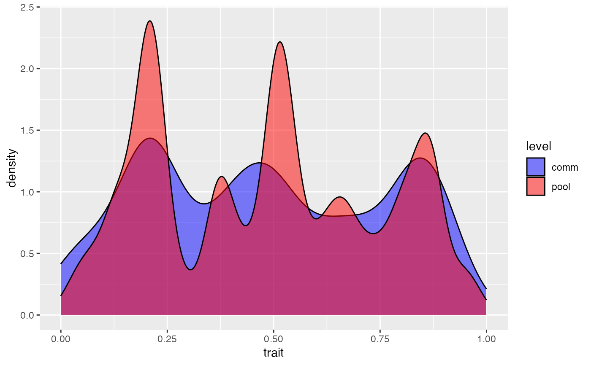
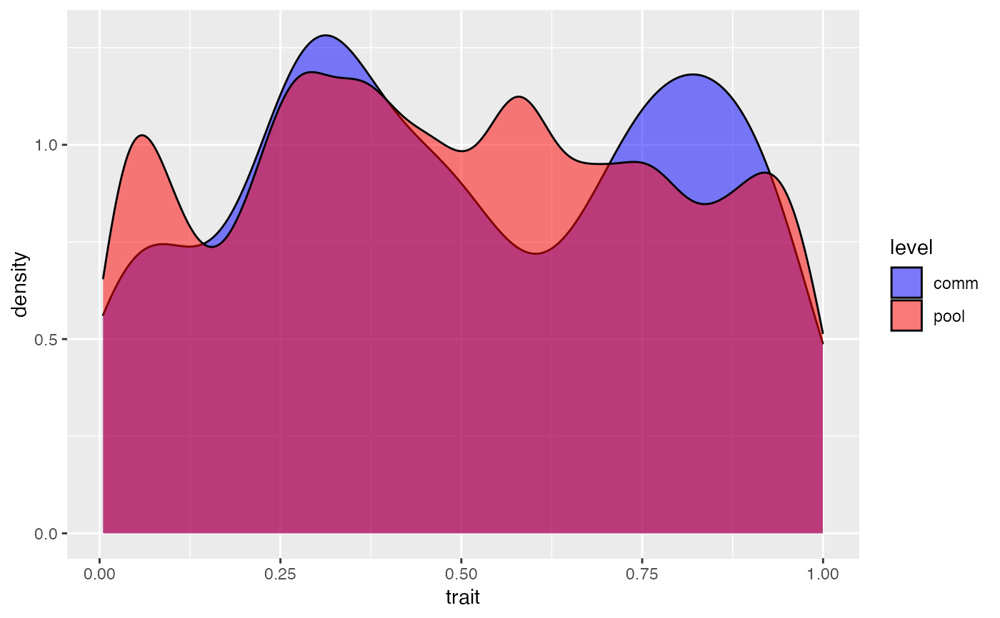
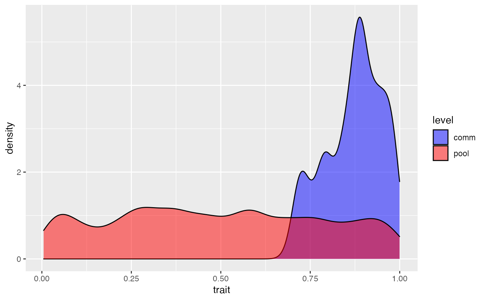
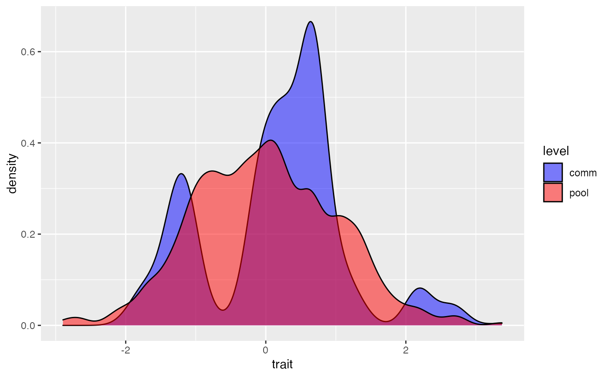
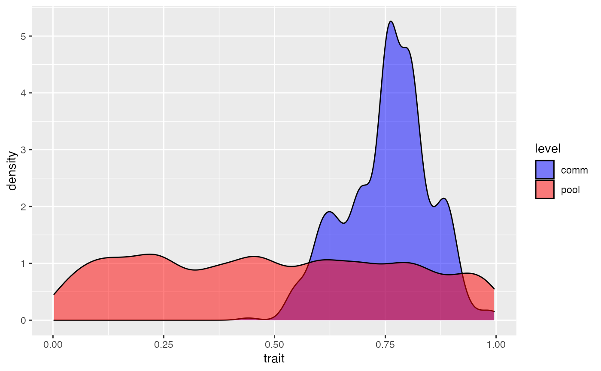

coalesc.RdSimulates the composition of a community based on immigration from a regional pool, habitat filtering depending on local environment and species traits, and local birth-death stochastic dynamics.
coalesc(J, m = 1, theta = NULL, filt = NULL, filt.vect = F, add = FALSE, var.add =NULL, pool = NULL, traits = NULL, Jpool = 50 * J, verbose = FALSE, checks = TRUE)
| J | number of individuals in the local community. |
|---|---|
| m | migration rate (if |
| theta | parameter of neutral dynamics in the regional pool (used only if |
| filt | a function representing the effect of local habitat filtering. For an individual that displays the value(s) |
| filt.vect | indicates whether the filtering function can be vectorized. It means that the function can take as input a vector of trait values and provide a vector of the corresponding weights. |
| add | indicates if additional variables must be passed to |
| var.add | additional variables to be passed to |
| pool | the regional pool of species providing immigrants to the local community. It should include the label of individual on first column, and of its species on second column. If |
| traits | a matrix or data.frame including one or several traits on columns. A unique trait value is assigned to each species in the regional pool. Species names of |
| Jpool | if |
| verbose | if |
| checks | should initial checks that the inputs are correct be performed? |
Coalescent-based simulation of a community of size J. This generic function can simulate a neutral community (if filt = NULL) or a community undergoing both neutral and niche-based dynamics. In the latter case, filt(t) represents the relative ability of immigrants with trait values t in the regional pool to enter the community.
If trait-based filtering involves several traits, filt(t) must be defined such as t is a vector of the trait values of a candidate immigrant.
See example below.
A Shiny app is available to visualize simulated trait distributions for chosen parameter values in the model.
a data.frame of simulated individuals, with the label of ancestor individual in the regional pool on first column (as in first column of pool), species label on second column (as in second column of pool), and species trait (as in third column of pool).
Not provided if m = 1 and filt = NULL: in this case the function provides a sample of the regional pool.
a data.frame of the individuals of the regional source pool, with the label of ancestor individual in the regional pool on first column (as in first column of input pool), species label on second column (as in second column of input pool), and species trait (as in third column of input pool).
the call function.
Hurtt, G. C. and S. W. Pacala (1995). "The consequences of recruitment limitation: reconciling chance, history and competitive differences between plants." Journal of Theoretical Biology 176(1): 1-12.
Gravel, D., C. D. Canham, M. Beaudet and C. Messier (2006). "Reconciling niche and neutrality: the continuum hypothesis." Ecology Letters 9(4): 399-409.
Munoz, F., P. Couteron, B. R. Ramesh and R. S. Etienne (2007). "Estimating parameters of neutral communities: from one Single Large to Several Small samples." Ecology 88(10): 2482-2488.
Munoz, F., B. R. Ramesh and P. Couteron (2014). "How do habitat filtering and niche conservatism affect community composition at different taxonomic resolutions?" Ecology 95(8): 2179-2191.
F. Munoz
# Simulation of a neutral community including 100 individuals J <- 500; theta <- 50; m <- 0.1 comm1 <- coalesc(J, m, theta) # Regional and local trait distributions plot_comm(comm1)# Define a regional pool of species with equal abundances pool <- cbind(1:10000, rep(1:500, 20), rep(NA, 10000)) # Uniform distribution of trait values t.sp <- runif(500) # No intraspecific variation pool[,3] <- t.sp[pool[,2]] # Generate a neutral community drawn from the pool comm2<- coalesc(J, m, pool = pool) plot_comm(comm2)# Directional habitat filtering toward t = 0 comm3 <- coalesc(J, m, filt = function(x) 1 - x, pool = pool) # Regional and local trait distributions plot_comm(comm3)# Function for environmental filtering sigma <- 0.1 filt_gaussian <- function(t, x) exp(-(x - t)^2/(2*sigma^2)) # Stabilizing habitat filtering around t = 0.1 comm4a <- coalesc(J, m, filt = function(x) filt_gaussian(0.1, x), pool = pool) plot_comm(comm4a)# Stabilizing habitat filtering around t = 0.5 comm4b <- coalesc(J, m, filt = function(x) filt_gaussian(0.5, x), pool = pool) plot_comm(comm4b)# Stabilizing habitat filtering around t = 0.9 comm4c <- coalesc(J, m, filt = function(x) filt_gaussian(0.9, x), pool = pool) plot_comm(comm4c)#> [1] 0.1334203#> [1] 0.5028231#> [1] 0.8803218# Disruptive habitat filtering around t = 0.5 comm5 <- coalesc(J, m, filt = function(x) abs(0.5 - x), pool = pool) plot_comm(comm5)# Multi-modal habitat filtering t.sp <- rnorm(500) pool[, 3] <- t.sp[pool[,2]] comm6 <- coalesc(J, m, filt = function(x) sin(3*x) + 1, pool = pool) plot_comm(comm6)# Filtering depending on multiple traits # We define two traits t1.sp <- runif(500) t2.sp <- runif(500) pool[, 3] <- t1.sp[pool[,2]] pool <- cbind(pool, t2.sp[pool[,2]]) # Here the probability of successful immigration depends # on the product of Gaussian filters playing on two traits, # with different optimal values comm7 <- coalesc(J, m, filt = function(x) filt_gaussian(0.75, x[1])*filt_gaussian(0.25, x[2]), pool = pool) # Distribution of trait 1 plot_comm(comm7, seltrait = 1)